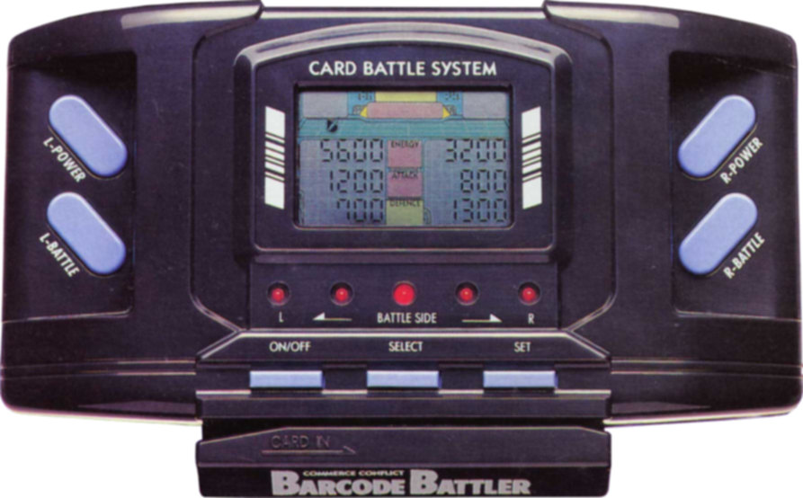
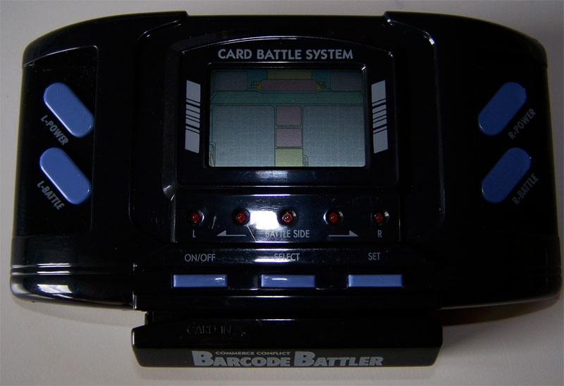

Barcode Battler
A handheld game that turned every supermarket barcode into an RPG character — Japan's brief, glorious fad for scanning cereal boxes into warriors

Overview
The Barcode Battler was a handheld electronic game released by Epoch Co. in Japan in March 1991 that used a built-in optical barcode scanner as its sole input mechanism. The device shipped with 32 pre-printed barcode cards depicting fantasy warriors, wizards, and enemies, but its radical premise was that players could also use any real-world product barcode — cereal boxes, cleaning supplies, snack packaging — and the device would deterministically hash the numeric barcode data into character statistics (HP, Attack, Defense) for turn-based RPG combat. The game displayed results using only 7-segment numeric characters on a monochrome LCD: no graphics, no sound effects beyond beeps, just numbers on a screen and cards in your hand.
The gameplay involved swiping barcodes to generate characters and items, then engaging in alternating-turn battles across multiple modes including a 10-stage single-player story mode. An internal random number generator determined combat outcomes based on the generated stats, while hidden parameters and a secret timing mechanic added depth. The Barcode Battler II (1992) added an output port that connected to the Famicom and Super Famicom, turning the handheld into a pure barcode reader for console games — 11 games were released, including titles for Super Mario, Zelda, Doraemon, and Dragon Slayer.
In Japan, the Barcode Battler was a genuine cultural phenomenon. Reports circulated of certain food products selling out because schoolchildren discovered their barcodes generated exceptionally powerful characters. Strategy guide books taught barcode-splicing techniques, and a manga series ('Barcode Fighter') ran for 30 chapters in CoroCoro Comic. In the West, it was a commercial failure, remembered today as a beloved piece of retro-tech kitsch — 'so bad it's almost cool.' The Barcode Battler pioneered concepts that would become industry standards decades later: barcode/QR scanning in games, physical-to-digital bridging (Skylanders, amiibo), and collectible card stat optimization.
Deep dive
Epoch Co., founded in 1958, had produced Japan's first successful programmable console (Cassette Vision, 1981) but its Game Pocket Computer (1984) had failed. The Barcode Battler was Epoch's bid to capture the emerging Japanese 'barcode gaming fad' of the late 1980s — a brief period when toy makers realized every consumer product carried machine-readable data. By marrying the barcode scanner with an RPG format (immensely popular thanks to Dragon Quest and Final Fantasy), Epoch created a toy that turned the entire supermarket into a game cartridge. The device retailed for approximately ¥9,800.
The Barcode Battler's optical scanner read 8-digit or 13-digit JAN/EAN/UPC barcodes (and ISBN codes) swiped through a slot on the right side of the injection-moulded polystyrene body. The scanner was temperamental — swipe too fast or too slow and the screen displayed 'MISS.' A deterministic hashing algorithm mapped the barcode's numeric digits to three visible stats (HP, ST/Attack, DF/Defense) plus a hidden 'special ability' parameter. The LCD displayed only alphanumeric 7-segment characters. Game modes included a 10-stage COM mode (story), B1 (player-supplied enemies), and B2 (two-player versus). A mysterious 'B3 mode' appeared on the LCD but was never implemented. The Barcode Battler II added an output port that connected to the Famicom and Super Famicom via a BBII Interface adapter, functioning as a pure barcode reader while the console handled gameplay. Eleven console games were released from 1992–1995, spanning Super Mario, Zelda, Doraemon, Dragon Slayer, Lupin III, Spider-Man, and J-League soccer. Licensed franchise cards were sold separately for Super Mario World, Zelda: A Link to the Past, Street Fighter II, and others.
The Barcode Battler captured the Japanese public imagination in ways that seem absurd in retrospect. Schoolchildren cut barcodes off supermarket products without buying them, causing problems for retailers. Unscrupulous adults sold 'super-powerful' custom barcodes to naive children. Certain food products reportedly sold out when their barcodes were discovered to produce powerful in-game characters. Epoch published a regular newsletter, held official tournament events at toy stores distributing exclusive promotional cards, and commissioned the 30-chapter manga 'Barcode Fighter' (バーコードファイター) by Toshihiro Ono, serialized in Monthly CoroCoro Comic from 1992–1994. Irish supermarket chains Quinnsworth and Crazy Prices gave away 10,000 units in a 1993 promotion. In the West, the device was shelved alongside Game Boy and Game Gear — offering no graphics and temperamental scanning — and quickly vanished.
Despite its commercial failure, the Barcode Battler pioneered concepts that became industry standards: barcode/QR scanning in games (Nintendo e-Reader, Skannerz, modern mobile QR games), physical-to-digital bridging (Skylanders, Disney Infinity, amiibo), collectible card battling with real-world objects, and external storage media games (echoes in Monster Rancher's CD-reading mechanic). In 2025, UK developer Tanukii Studios published Riot Gunheads, a new 36-card set compatible with the Barcode Battler II hardware, demonstrating the device's enduring appeal.
Team & pioneers
- Epoch Co., Ltd.. Japanese toy and video game company, founded 1958 by Maeda Taketora. Creator of Cassette Vision (1981) and Sylvanian Families.
- Toshihiro Ono. Manga artist who created the 'Barcode Fighter' promotional manga series (1992–1994)
Media

Sources
- Wikipedia — Barcode Battler
- Wikipedia (JA) — バーコードバトラー (exhaustive Japanese entry)
- Time Extension — 'Barcode Battler: The Early 90s Classic That's So Crap It's Almost Cool' (Damien McFerran, 2025)
- Retro Handhelds — 'Game Over: The History of Barcode Gaming' (Jim Gray, 2025)
- Museum of Design in Plastics — Barcode Battler catalog entry with 10 photographs
- SUPERJUMP Magazine — 'Once Upon a Time, Grocery Barcodes Unlocked an RPG World' (C.S. Voll, 2025)
- Eurogamer — 'Not even Mario and Zelda could make the Barcode Battler any good' (Jennifer Allen, 2019)
- The Independent — 'Teachers swipe at bar code game' (1993 UK press coverage)
- Combat King's Barcode Battler Museum (fan site)
- Barcode Battler Cards Database (fan site)